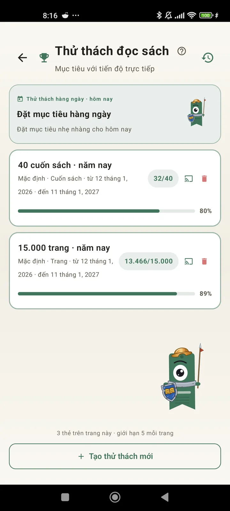

Hiểu rõ bản thân là một độc giả
Thử thách, bingo, widget và nhiều tính năng khác để bạn tận dụng tối đa việc đọc. Mới trong 3.7: widget thử thách và bingo.

Thử thách đọc sách
Đặt mục tiêu theo số trang, chuỗi ngày hoặc thể loại. Tối đa 15 thử thách đang chạy miễn phí, không giới hạn với Pro. Cộng thêm một thử thách hằng ngày tùy chỉnh không tính vào giới hạn.

Thử thách hằng ngày
Mỗi ngày một mục tiêu mới. Hoàn thành thử thách trước nửa đêm để giữ chuỗi của bạn.

Bingo đọc sách
Mỗi tháng có hai bingo mới với các ô theo chủ đề. Hoàn thành hàng, cột hoặc cả bảng.

Tóm tắt tuần
Mỗi thứ Hai, một bức tranh về tuần của bạn: số trang đã đọc, tổng thời gian, chuỗi và so sánh với tuần trước.

Tổng kết tháng
Khi một tháng kết thúc, Lecturameter tổng kết lại: số trang, thời gian, sách đã hoàn thành, nhịp đọc từng ngày và cuốn sách của tháng.

Widget bingo Pro
Bảng bingo của tháng này luôn trong tầm mắt, với các ô bạn đã hoàn thành và các đường bạn đã nối được.

Widget sách Miễn phí
Xem cuốn sách bạn đang đọc ngay trên màn hình chính: bìa, tiêu đề, tác giả, số trang và phần trăm tiến độ, luôn được cập nhật. Có thể đổi kích thước tùy ý.
Thật đấy bro, ứng dụng này như một liệu pháp vậy, mình từ đọc vài trang mỗi ngày lên khoảng 20 trang mỗi ngày và vẫn đang tiến bộPhản hồi của người dùng, gửi qua email

So sánh theo tháng Pro
Nhìn nhanh các tháng gần đây mà không cần mở ứng dụng. Các cột thể hiện số trang của từng tháng, tháng hiện tại được làm nổi bật, để bạn thấy ngay tháng này mình đọc tốt hơn hay kém hơn tháng trước.

Widget thử thách Pro
Các thử thách đang chạy và tiến độ của chúng ngay trên màn hình chính. Chọn thử thách muốn hiển thị từ màn hình Thử thách.